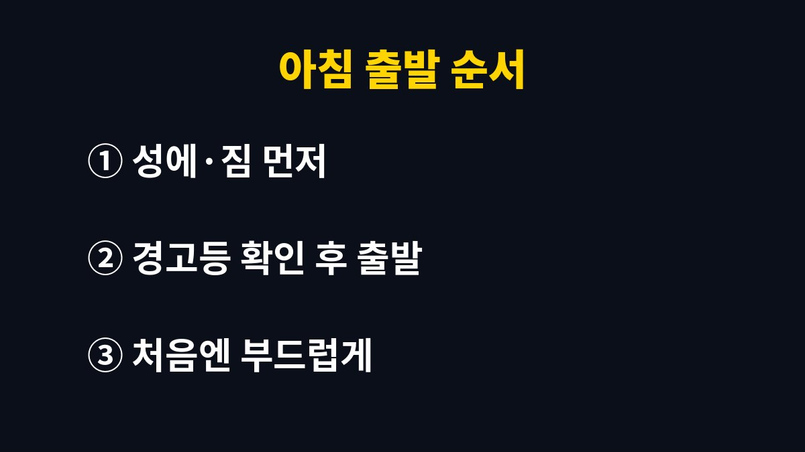

겨울 예열 공회전은 길게 할수록 손해다.
요즘 차는 시동을 걸고 계기판 경고등이 꺼진 뒤 천천히 달리면서 엔진을 데워도 충분하고, 서울에서는 2분이 넘는 공회전에 과태료 5만 원이 나올 수 있다.
아침마다 차를 10분씩 켜 두는 습관은 엔진에도 지갑에도 남는 게 없다.
카뷰레터를 쓰던 예전 엔진은 충분히 데워야 시동이 안정됐다.
지금 차는 전자제어 연료분사 방식이라 차가운 상태에서도 연료량을 스스로 맞춘다.
세워 둔 채 공회전을 하면 엔진은 아주 느리게 데워지고, 변속기와 타이어, 서스펜션은 거의 데워지지 않는다.
부드럽게 달리면 엔진과 구동계가 함께 온도를 올린다.
그래서 나는 시동 후 경고등이 모두 꺼지고 엔진 소리가 가라앉으면 바로 출발한다.
엔진오일도 시동 직후 몇십 초면 엔진 구석까지 돈다.
그 뒤로 서 있는 시간은 연료만 쓰고 배기가스만 내보내는 시간에 가깝다.
공회전 중에는 연료가 완전히 타지 않아 오히려 엔진 안에 찌꺼기가 쌓이기 쉽다는 설명도 정비 현장에서 자주 듣는다.
오히려 반대다.
서울시는 겨울부터 이듬해 3월까지 차량 공회전과 배출가스를 집중단속한다고 안내한 바 있다.
미세먼지가 짙어지는 계절이라 단속도 이 시기에 몰린다.
터미널, 차고지, 대형 주차장처럼 차가 오래 서 있는 곳이 주요 단속 장소다.
히터의 따뜻한 바람은 엔진 냉각수의 열에서 나온다.
세워 둔 엔진보다 달리는 엔진의 냉각수 온도가 더 빨리 오른다.
출발 직후 몇 분은 송풍을 약하게 두고 앞유리 쪽으로만 바람을 보내면 김서림도 줄고 실내도 금방 데워진다.
다만 앞유리에 성에가 두껍게 끼어 앞이 보이지 않을 때는 예외다.
시야가 확보되기 전에 출발하는 건 공회전보다 훨씬 위험하다.
이럴 때는 성에를 긁어 내는 동안만 시동을 걸어 두고, 앞이 보이면 바로 출발한다.
공회전 제한은 대기환경보전법에 근거해 각 시·도가 조례로 정한다.
그래서 허용 시간과 단속 장소가 지역마다 다르다.
서울시는 2015년 공회전 제한 시간을 5분에서 2분으로 줄였다.
위반하면 과태료 5만 원이 부과되고, 중점 제한 장소에서는 사전 경고 없이 바로 부과될 수 있다.
| 항목 | 기준 | 확인할 곳 |
|---|---|---|
| 근거 | 대기환경보전법과 시·도 조례 | 사는 지역 조례 |
| 서울 허용 시간 | 2분(2015년 5분에서 단축) | 서울시 환경 안내 |
| 위반 과태료 | 5만 원 | 지자체 공회전 단속 안내 |
| 주요 단속 장소 | 터미널·차고지·주차장 등 지정 장소 | 구청 공회전 제한 장소 안내 |
| 흔한 적용 제외 | 구급차·소방차 같은 출동 차량, 냉동·냉장 장치를 돌리는 차, 정비 중인 차 | 지역 조례 본문 |
기온이 아주 낮거나 높은 날에는 허용 시간을 늘리거나 제한을 풀어 주는 규정을 둔 곳도 있다.
이 예외는 지역마다 숫자가 달라서 사는 구청 누리집의 공회전 제한 안내에서 직접 확인해야 한다.
내 차가 늘 서 있는 아파트 주차장이나 회사 주차장이 지정 장소인지도 같은 화면에서 볼 수 있다.
공회전을 줄이려면 차에 타기 전에 할 일을 먼저 끝내면 된다.
시동을 걸고 나서 성에를 긁고, 짐을 싣고, 내비게이션을 맞추면 그 시간이 고스란히 공회전이 된다.
나는 순서를 거꾸로 바꿨다.

한파 특보가 내려진 날 밤새 밖에 세워 둔 차는 시동 직후 회전수가 한동안 높게 머문다.
이럴 때는 회전수가 내려올 때까지 잠깐 기다린 뒤 출발하는 편이 낫다.
예열 표시등이 있는 디젤차는 표시등이 꺼진 다음 시동을 거는 것이 순서다.
제조사마다 권하는 시동 절차가 조금씩 달라 차량 설명서의 겨울철 운전 항목을 한 번 읽어 두면 된다.
스마트키나 앱으로 원격 시동을 걸어 두는 것도 공회전이다.
집에서 내려가는 시간까지 계산해 미리 켜 두면 그 몇 분이 그대로 단속 시간에 들어간다.
원격 시동은 차에 거의 도착했을 때 거는 정도로만 쓰면 된다.
하이브리드차는 정차 중에도 배터리 상태와 실내 난방 요구에 따라 엔진이 스스로 켜졌다 꺼진다.
이 경우 운전자가 일부러 세워 둔 시간이 길어지면 엔진이 계속 돌 수 있어, 출발 준비를 먼저 끝내는 순서가 똑같이 통한다.
전기차는 공회전 개념은 없지만 출발 전 예약 공조를 충전기에 연결된 상태에서 돌리면 주행용 배터리를 덜 쓴다.
겨울 예열은 시간보다 순서 문제다.
차에 타기 전에 할 일을 끝내 두면 공회전 시간은 자연스럽게 줄어든다.
사는 지역의 허용 시간과 단속 장소가 궁금하면 구청 환경 부서나 시청 누리집의 공회전 제한 안내부터 확인한다.
참고 자료: 서울특별시 「자동차 공회전 제한 안내」(2026년 11월 확인)
※ 2026년 기준 공공기관 안내를 바탕으로 정리한 글이며, 차종과 연식에 따라 기준이 다를 수 있어 차량 설명서와 공식 안내를 함께 확인하길 바란다.